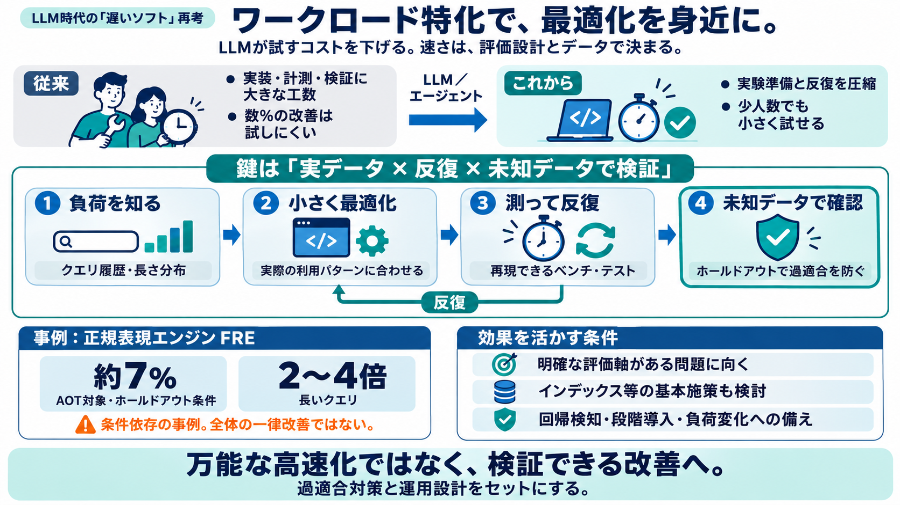

Agentic Code Optimization via Compiler-LLM Cooperation
Generating performant executables from high level languages is critical to software performance across a wide range of d…

LLMで「遅さ」が変わる
性能改善が“専門家の大案件”から“少人数でも試せる反復”へ移りつつある。 その結果、どんな最適化をやるべきか——意思決定の基準も変わってきた。
試すのが高コスト
従来の性能最適化は、実装だけでなくベンチ設計・検証・バグ調査にも時間が必要だった。 そのため小規模案件では、2%〜数%の改善を試す合理性が弱くなりがちだった。
速さは「探検」
LLM/エージェントはコード生成だけでなく、計測・テスト環境整備・反復実験を圧縮する。 つまり「地図（評価設計）」が書きやすくなり、探検回数が増える——そこで差が出る。
勝ち筋の変化
重要なのは最適化を“永遠の総当たり”にしないこと。 反復実験×ホールドアウト（未知データ）で、効く範囲を切り出すのが鍵になる。
FREとホールドアウト
正規表現エンジンFREでは、rebarベンチのような過適合しやすさをホールドアウトベンチで是正する。 全体の劇的改善は自明ではないが、条件次第で速度向上が観測される。
改善は一様でない
改善率が小さく見えるケースもある一方で、ホールドアウト条件や長い検索クエリでは効きやすい。 例として、AOT対象で約7%程度、長いクエリで2〜4倍の改善が語られる。
ワークロード特化とは
“クラス汎用”より“ワークロード特化”が現実的になるのは、手元の実データで方向性を絞れるからだ。 ripgrep（rg）の自分のクエリ履歴のように、負荷の形が分かっているほど実験が回る。
反論への向き合い
「最適化より先にインデックスを作るべき」という反論はもっともだ。 ただ本稿の価値は、“専門的で高コストな技術作業が低コストで試せるようになった”という実験報告にある。
積み上げで差が広がる
マルチスレッド化や高度な実験設計のように従来は工数が重い領域も、反復と検証で勝ち筋が増える。 LLM/エージェントが得意なのは「閉じた最適化問題」ほどだ、という限界も同時に認められている。
あなたの見立て
私見では、本文の結論は「遅いソフトが許容されなくなる方向」だと捉えるのが妥当だ。 ただし一般化にはデータ条件と評価設計が要り、運用面（回帰検知・段階導入・副作用）は別途設計が必要。
要点まとめ
「最適化の民主化（参入障壁低下）」は進むが、“万能に速くなる”ではなく「検証可能な形で改善しやすくなる」がより正確。 そしてワークロード特化には、過適合・レジーム変化・運用リスクへの補完が要る。
Generating performant executables from high level languages is critical to software performance across a wide range of d…
In our future work, we focus on utilizing dynamic runtime data, such as execution time and memory usage, in both trainin…
This dissertation considers performance, portability, and productivity, but energy efficiency is also increasingly impor…
This section summarizes notable results. Complete conversation histories of the best runs are available on c3po-preconf…
via sampling remains challenging, especially when applied to fully optimized binaries. Such inaccurate profile data can …